Arc-length control method (Crisfield, 1981 and Fafard & Massicotte, 1993)
Contents
Notation and references
The notation followed here and in the following MATLAB codes:
- arc_length_Crisfield.m
- arc_length_Crisfield_modified.m
conforms to that used by Fafard & Massicotte in the following reference:
Fafard, M. and Massicotte, B. (1993). ”Geometrical Interpretation of the Arc-Length Method.” Computers & Structures, 46(4), 603–615. This reference is denoted as [3] inside the text of the above codes.
Except for the above study, the following reference should be noted as well:
Crisfield, M. A. (1981). ”A Fast Incremental/Iterative Solution Procedure that Handles "Snap-Through".” Computers & Structures, 13(), 55–62. This reference is denoted as [4] inside the text of the above codes.
Algorithms implemented
- Arc length control method as described by Fafard & Massicotte (1993), after Crisfield (1981).
- Modified version of the above method which directs the search towards 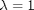 , where 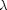 is the load factor.
help arc_length_Crisfield %1 help arc_length_Crisfield_modified %2
Arc-length control method (Crisfield, 1981)
Description
The equation functn(#t#)=0 is solved for #t#, where
#t#=[#u#;#lambda#], #u# is the unknown displacement vector and
#lambda# is the unknown load factor. The method used is the
arc-length method described by Crisfield (1981): "A Fast
Incremental/Iterative Solution Procedure That Handles “Snap-Through”"
with the following modifications:
1.The capability to select between the cylindrical Crisfield method
(original) or the spherical Crisfield method (described in [3] in the
first paragraph after equation (35).
2.The initial value of #lambda# is set equal to
#lambda0#+#Deltalambdabar# instead of #Deltalambdabar# as is shown in
Figure 8 in [3].
The method is implemented according to the flow chart in Fig.8 and
the procedure from equation (22) to equation (40) presented in [3].
Required input arguments
#functn# is the function handle defining the equation to be solved.
The definition of #functn# must be of the type
[#R#,#Q#,#K#]=functn(#t#) where #R# ([#dim# x 1]) is the out of
balance force vector, #Q# ([#dim# x 1]) is the tangent load vector
given by Q(a,lambda)=-d{R(a,lambda)}/d{lambda}, #K# ([#dim# x #dim#])
is the tangent stiffness matrix given by
K(a,lambda)=d{R(a,lambda)}/d{a} and #t# ([#dim#+1 x 1]) is the
generalized unknown vector defined in the description section.
#u0# ([#dim# x 1]) is the starting point of the solution.
Optional input arguments
#Crisver# (string) determines the version of the Crisfield method
that will be used. It can take the values 'sph' (default) for the
spherical Crisfield method or 'cyl' for the cylindrical Crisfield
method (as published in [4]).
#nmax# (scalar) is the maximum number of increments. Default value is
30.
#Deltalambdabar# (scalar) is the load increment at the first step.
Default value is 1.
#imax# (scalar) is the maximum number of iterations per increment.
Default value is 12.
#Id# (scalar) is the desired number of iterations per increment.
Default value is 4.
#tol# (scalar) is the tolerance for the convergence criterion.
Default value is 5e-5.
#KTup# (scalar) is the stiffness matrix updater (number of iterations
after which the tangent stiffness matrix is updated). For #KTup# = 1
the algorithm implemented is Full Arc-Length method. For #KTup# = Inf
the algorithm implemented is Initial Stiffness Arc-Length method.
Default value is 1.
#dettol# (scalar) is the tolerance for singularity of Jacobian (#J#).
Default value is 1e-4.
Output arguments
#u# ([#dim# x #nmax#]) are the unknown displacements.
#lambda# ([1 x #nmax#]) are the load factors (one per increment).
#iter# ([1 x #nmax#]) is the number of iterations for each increment.
#Aout# ([1 x #nmax#]) is the initial estimates of A (sign
determinant) at each increment. The sign of A is positive along
loading branches of the response curve (#lambda# increases) and is
negative along unloading portions of the curve (#lambda# decreases).
#DeltaSout# ([1 x #nmax#]) are the arc-length increments.
Parents (calling functions)
None.
Children (called functions)
None.
__________________________________________________________________________
Copyright (c) 09-Mar-2014
George Papazafeiropoulos
First Lieutenant, Infrastructure Engineer, Hellenic Air Force
Civil Engineer, M.Sc., Ph.D. candidate, NTUA
Email: gpapazafeiropoulos@yahoo.gr
Website: http://users.ntua.gr/gpapazaf/
Modified arc-length control method (Crisfield, 1981)
Description
The equation functn(#t#)=0 is solved for #t#, where
#t#=[#u#;#lambda#], #u# is the unknown displacement vector and
#lambda# is the unknown load factor. The method used is the
arc-length method described by Crisfield (1981): "A Fast
Incremental/Iterative Solution Procedure That Handles “Snap-Through”"
with the following modifications:
1.The capability to select between the cylindrical Crisfield method
(original) or the spherical Crisfield method (described in [3] in the
first paragraph after equation (35).
2.The initial value of #lambda# is set equal to
#lambda0#+#Deltalambdabar# instead of #Deltalambdabar# as is shown in
Figure (8) in [3].
3.The solution procedure is directed towards #lambda#=1, where
#lambda# is the load factor.
The method is implemented according to the flow chart in Fig.8 and
the procedure from equation (22) to equation (40) presented in [3].
Required input arguments
#functn# is the function handle defining the equation to be solved.
The definition of #functn# must be of the type
[#R#,#Q#,#K#]=functn(#t#) where #R# ([#dim# x 1]) is the out of
balance force vector, #Q# ([#dim# x 1]) is the tangent load vector
given by Q(a,lambda)=-d{R(a,lambda)}/d{lambda}, #K# ([#dim# x #dim#])
is the tangent stiffness matrix given by
K(a,lambda)=d{R(a,lambda)}/d{a} and #t# ([#dim#+1 x 1]) is the
generalized unknown vector defined in the description section.
#u0# ([#dim# x 1]) is the starting point of the solution.
Optional input arguments
#Crisver# (string) determines the version of the Crisfield method
that will be used. It can take the values 'sph' (default) for the
spherical Crisfield method or 'cyl' for the cylindrical Crisfield
method (as published in [4]).
#nmax# (scalar) is the maximum number of increments. Default value is
30.
#Deltalambdabar# (scalar) is the load increment at the first step.
Default value is 1.
#imax# (scalar) is the maximum number of iterations per increment.
Default value is 12.
#Id# (scalar) is the desired number of iterations per increment.
Default value is 4.
#tol# (scalar) is the tolerance for the convergence criterion.
Default value is 5e-5.
#KTup# (scalar) is the stiffness matrix updater (number of iterations
after which the tangent stiffness matrix is updated). For #KTup# = 1
the algorithm implemented is Full Arc-Length method. For #KTup# = Inf
the algorithm implemented is Initial Stiffness Arc-Length method.
Default value is 1.
#dettol# (scalar) is the tolerance for singularity of Jacobian (#J#).
Default value is 1e-4.
Output arguments
#u# ([#dim# x #nmax#]) are the unknown displacements.
#lambda# ([1 x #nmax#]) are the load factors (one per increment).
#iter# ([1 x #nmax#]) is the number of iterations for each increment.
#Aout# ([1 x #nmax#]) is the initial estimates of A (sign
determinant) at each increment. The sign of A is positive along
loading branches of the response curve (#lambda# increases) and is
negative along unloading portions of the curve (#lambda# decreases).
#DeltaSout# ([1 x #nmax#]) are the arc-length increments.
Parents (calling functions)
None.
Children (called functions)
None.
__________________________________________________________________________
Copyright (c) 09-Mar-2014
George Papazafeiropoulos
First Lieutenant, Infrastructure Engineer, Hellenic Air Force
Civil Engineer, M.Sc., Ph.D. candidate, NTUA
Email: gpapazafeiropoulos@yahoo.gr
Website: http://users.ntua.gr/gpapazaf/
Crisfield's arc-length method is described also in the material distributed to students of the Analysis and Design of Earthquake Resistant Structures postgraduate course of the School of Civil Engineering, NTUA, at the subject "Nonlinear Finite Elements" with Prof. M. Papadrakakis as course instructor. This version includes some improvements compared to the actual course material.
Equations solved
The following equations are solved for 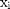 and
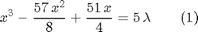
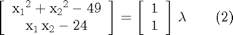
Function definitions
Two functions are utilized for the arc-length procedure:
The first function (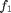, defined in the file function2.m ), needed to solve equation (1) is a cubic polynomial with the following properties:
- Function value:
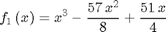
- Function jacobian (derivative):
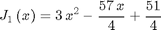
- Passes through the origin:
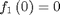
The second function (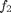, defined in the file function1.m ), needed to solve equation (2) is a nonlinear smooth function with the following properties:
- Function value:
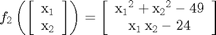
- Function jacobian:
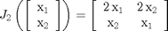
Function coding
- For function :
function [R,Q,K]=function2(t) a=t(1:end-1); lambda=t(end); f1=a^3-57/8*a^2+51/4*a; Rint=f1; Rext=lambda*5; % Out of balance force column vector (1-by-1) R=Rint-Rext; % Tangent force column vector (1-by-1) Q=5; % Jacobian matrix (1-by-1) K=3*a^2-57/4*a+51/4; end
- For function :
function [R,Q,K]=function1(t) a=t(1:end-1); lambda=t(end); f1=a(1)^2+a(2)^2-49; f2=a(1)*a(2)-24; Rint=[f1;f2]; Rext=lambda*[1;1]; % Out of balance force column vector (2-by-1) R=Rint-Rext; % Tangent force column vector (2-by-1) Q=[1;1]; % Jacobian matrix (2-by-2) K=[2*a(1), 2*a(2); a(2), a(1)]; end
Initial definitions
In the subsequent code the following initial definitions are made (in the order presented below):
- Define function
- Define function
- Set starting point (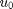) for solution of equation (1)
- Set starting point () for solution of equation (2)
- Define the version of the Crisfield method to be used (cylindrical is selected)
- Set number of increments desired
- Set initial value of 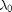
- Set initial value of

- Set maximum number of iterations permitted per increment
- Set number of iterations desired to each converged point (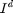)
- Set tolerance for convergence.
- Set the number of iterations every which the stiffness matrix of the problem is updated. KTup=1 corresponds to the full arc length method
- Set the tolerance for determining if the stiffness matrix is singular (this is true if its determinant is below dettol)
functn1=@function2; %1 functn2=@function1; %2 u01=0.1; %3 u02=[4;6]; %4 Crisver='cyl'; %5 nmax=30; %6 lambda0=0; %7 Deltalambdabar=0.4; %8 imax=20; %9 Id=1; %10 tol=5e-5; %11 KTup=1; %12 dettol=1e-4; %13
Applications
- Default application of the arc length control method as described by Crisfield (1981) to solve equation (1)
- Default application of the modified version of the Crisfield (1981) arc length control method to solve equation (1)
- Non-default application of the arc length control method as described by Crisfield (1981) to solve equation (1)
- Non-default application of the modified version of the Crisfield (1981) arc length control method to solve equation (1)
- Default application of the arc length control method as described by Crisfield (1981) to solve equation (2)
- Default application of the modified version of the Crisfield (1981) arc length control method to solve equation (2)
- Non-default application of the arc length control method as described by Crisfield (1981) to solve equation (2)
- Non-default application of the modified version of the Crisfield (1981) arc length control method to solve equation (2)
[u1,lambda1,iter1,Aout1,DeltaSout1] = arc_length_Crisfield(functn1,u01); %1 Result1=[u1',lambda1',iter1',Aout1',DeltaSout1'] %1 [u2,lambda2,iter2,Aout2,DeltaSout2] = arc_length_Crisfield_modified(functn1,u01); %2 Result2=[u2',lambda2',iter2',Aout2',DeltaSout2'] %2 [u3,lambda3,iter3,Aout3,DeltaSout3] = arc_length_Crisfield(functn1,u01,Crisver,nmax,lambda0,Deltalambdabar,imax,Id,tol,KTup,dettol); %3 Result3=[u3',lambda3',iter3',Aout3',DeltaSout3'] %3 [u4,lambda4,iter4,Aout4,DeltaSout4] = arc_length_Crisfield_modified(functn1,u01,Crisver,nmax,lambda0,Deltalambdabar,imax,Id,tol,KTup,dettol); %4 Result4=[u4',lambda4',iter4',Aout4',DeltaSout4'] %4 [u5,lambda5,iter5,Aout5,DeltaSout5] = arc_length_Crisfield(functn2,u02); %5 Result5=[u5',lambda5',iter5',Aout5',DeltaSout5'] %5 [u6,lambda6,iter6,Aout6,DeltaSout6] = arc_length_Crisfield_modified(functn2,u02); %6 Result6=[u6',lambda6',iter6',Aout6',DeltaSout6'] %6 [u7,lambda7,iter7,Aout7,DeltaSout7] = arc_length_Crisfield(functn2,u02,Crisver,nmax,lambda0,Deltalambdabar,imax,Id,tol,KTup,dettol); %7 Result7=[u7',lambda7',iter7',Aout7',DeltaSout7'] %7 [u8,lambda8,iter8,Aout8,DeltaSout8] = arc_length_Crisfield_modified(functn2,u02,Crisver,nmax,lambda0,Deltalambdabar,imax,Id,tol,KTup,dettol); %8 Result8=[u8',lambda8',iter8',Aout8',DeltaSout8'] %8
Result1 =
1.0e+12 *
0.0000 0.0000 0.0000 0 0.0000
0.0000 0.0000 0.0000 0.0000 0.0000
0.0000 0.0000 0.0000 -0.0000 0.0000
0.0000 0.0000 0.0000 0.0000 0.0000
0.0000 0.0000 0.0000 0.0000 0.0000
0.0000 0.0000 0.0000 0.0000 0.0000
0.0000 0.0000 0.0000 0.0000 0.0000
0.0000 0.0000 0.0000 0.0000 0.0000
0.0000 0.0000 0.0000 0.0000 0.0000
0.0000 0.0000 0.0000 0.0000 0.0000
0.0000 0.0000 0.0000 0.0000 0.0000
0.0000 0.0000 0.0000 0.0000 0.0000
0.0000 0.0000 0.0000 0.0000 0.0000
0.0000 0.0000 0.0000 0.0000 0.0000
0.0000 0.0000 0.0000 0.0000 0.0000
0.0000 0.0000 0.0000 0.0000 0.0000
0.0000 0.0001 0.0000 0.0000 0.0000
0.0000 0.0001 0.0000 0.0000 0.0000
0.0000 0.0003 0.0000 0.0000 0.0000
0.0000 0.0007 0.0000 0.0000 0.0000
0.0000 0.0017 0.0000 0.0000 0.0000
0.0000 0.0042 0.0000 0.0000 0.0000
0.0000 0.0099 0.0000 0.0000 0.0000
0.0000 0.0234 0.0000 0.0000 0.0000
0.0000 0.0556 0.0000 0.0000 0.0000
0.0000 0.1318 0.0000 0.0000 0.0000
0.0000 0.3128 0.0000 0.0000 0.0000
0.0000 0.7418 0.0000 0.0000 0.0000
0.0000 1.7589 0.0000 0.0000 0.0000
0.0000 4.1706 0.0000 0.0000 0.0000
Result2 =
-0.9927 1.3440 12.0000 0 1.0927
-0.6284 -2.2149 3.0000 -0.1830 0.3642
-0.1428 -0.3938 3.0000 0.0796 0.4856
0.5047 3.7003 12.0000 0.1636 0.6475
0.7205 1.3895 12.0000 0.5121 0.2158
0.6486 1.1090 3.0000 0.2671 0.0719
0.5526 1.0078 3.0000 -0.0754 0.0959
0.6806 1.2117 12.0000 -0.0828 0.1279
0.6379 1.0987 3.0000 0.1440 0.0426
0.5811 1.0398 3.0000 -0.0437 0.0568
0.6569 1.1419 12.0000 -0.0518 0.0758
0.6316 1.0925 3.0000 0.0809 0.0253
0.5979 1.0580 3.0000 -0.0255 0.0337
0.5530 1.0082 3.0000 -0.0318 0.0449
0.6129 1.0895 12.0000 -0.0388 0.0599
0.5929 1.0527 3.0000 0.0582 0.0200
0.5663 1.0234 3.0000 -0.0186 0.0266
0.6018 1.0676 12.0000 -0.0236 0.0355
0.5900 1.0495 3.0000 0.0337 0.0118
0.5742 1.0322 2.0000 -0.0110 0.0158
0.6057 1.0706 12.0000 -0.0142 0.0315
0.5952 1.0551 3.0000 0.0302 0.0105
0.5812 1.0400 2.0000 -0.0099 0.0140
0.5532 1.0084 3.0000 -0.0128 0.0280
0.5906 1.0563 12.0000 -0.0242 0.0374
0.5781 1.0365 3.0000 0.0347 0.0125
0.5615 1.0179 2.0000 -0.0113 0.0166
0.5947 1.0594 12.0000 -0.0146 0.0332
0.5836 1.0426 3.0000 0.0311 0.0111
0.5689 1.0263 2.0000 -0.0102 0.0148
Result3 =
0.2761 0.5997 2.0000 0 0.1761
0.3642 0.7494 2.0000 0.0974 0.0881
0.4082 0.8171 2.0000 0.0553 0.0440
0.4303 0.8493 2.0000 0.0296 0.0220
0.4413 0.8649 2.0000 0.0153 0.0110
0.4468 0.8727 1.0000 0.0078 0.0055
0.4523 0.8803 1.0000 0.0039 0.0055
0.4578 0.8879 1.0000 0.0040 0.0055
0.4633 0.8954 1.0000 0.0040 0.0055
0.4688 0.9028 1.0000 0.0041 0.0055
0.4743 0.9102 1.0000 0.0041 0.0055
0.4798 0.9175 1.0000 0.0041 0.0055
0.4853 0.9248 1.0000 0.0042 0.0055
0.4908 0.9319 1.0000 0.0042 0.0055
0.4963 0.9390 1.0000 0.0042 0.0055
0.5018 0.9460 1.0000 0.0043 0.0055
0.5073 0.9530 1.0000 0.0043 0.0055
0.5128 0.9599 1.0000 0.0044 0.0055
0.5183 0.9667 1.0000 0.0044 0.0055
0.5238 0.9735 1.0000 0.0045 0.0055
0.5293 0.9802 1.0000 0.0045 0.0055
0.5348 0.9868 1.0000 0.0046 0.0055
0.5403 0.9934 1.0000 0.0046 0.0055
0.5458 0.9998 1.0000 0.0046 0.0055
0.5513 1.0063 1.0000 0.0047 0.0055
0.5568 1.0126 1.0000 0.0047 0.0055
0.5624 1.0189 1.0000 0.0048 0.0055
0.5679 1.0251 1.0000 0.0048 0.0055
0.5734 1.0313 1.0000 0.0049 0.0055
0.5789 1.0374 1.0000 0.0049 0.0055
Result4 =
0.2761 0.5997 2.0000 0 0.1761
0.3642 0.7494 2.0000 0.0974 0.0881
0.4082 0.8171 2.0000 0.0553 0.0440
0.4303 0.8493 2.0000 0.0296 0.0220
0.4413 0.8649 2.0000 0.0153 0.0110
0.4468 0.8727 1.0000 0.0078 0.0055
0.4523 0.8803 1.0000 0.0039 0.0055
0.4578 0.8879 1.0000 0.0040 0.0055
0.4633 0.8954 1.0000 0.0040 0.0055
0.4688 0.9028 1.0000 0.0041 0.0055
0.4743 0.9102 1.0000 0.0041 0.0055
0.4798 0.9175 1.0000 0.0041 0.0055
0.4853 0.9248 1.0000 0.0042 0.0055
0.4908 0.9319 1.0000 0.0042 0.0055
0.4963 0.9390 1.0000 0.0042 0.0055
0.5018 0.9460 1.0000 0.0043 0.0055
0.5073 0.9530 1.0000 0.0043 0.0055
0.5128 0.9599 1.0000 0.0044 0.0055
0.5183 0.9667 1.0000 0.0044 0.0055
0.5238 0.9735 1.0000 0.0045 0.0055
0.5293 0.9802 1.0000 0.0045 0.0055
0.5348 0.9868 1.0000 0.0046 0.0055
0.5403 0.9934 1.0000 0.0046 0.0055
0.5458 0.9998 1.0000 0.0046 0.0055
0.5403 0.9935 20.0000 0.0047 0.0055
0.5406 0.9937 2.0000 -0.0046 0.0003
0.5407 0.9938 1.0000 0.0002 0.0001
0.5409 0.9940 1.0000 0.0001 0.0001
0.5410 0.9942 1.0000 0.0001 0.0001
0.5412 0.9943 1.0000 0.0001 0.0001
Result5 =
4.6983 5.2551 0.6900 4.0000 0 1.0210
5.3835 4.4982 0.2161 4.0000 0.6445 1.0210
5.7208 3.5345 -3.7801 4.0000 -0.4127 1.0210
5.7581 2.5141 -9.5235 4.0000 -0.1995 1.0210
5.5806 1.5086 -15.5810 4.0000 -0.1706 1.0210
5.2493 0.5428 -21.1505 4.0000 -0.1760 1.0210
4.8020 -0.3750 -25.8006 4.0000 -0.2017 1.0210
4.2622 -1.2417 -29.2922 3.0000 -0.2540 1.0210
3.4237 -2.3142 -31.9230 3.0000 -0.3641 1.3614
2.1272 -3.5846 -31.6253 3.0000 -1.3020 1.8152
0.1211 -4.9384 -24.5978 4.0000 1.3221 2.4202
-2.1700 -5.7184 -11.5910 4.0000 0.5553 2.4202
-4.5614 -5.3459 0.3846 5.0000 0.3984 2.4202
-5.6740 -3.7613 -2.6585 4.0000 1.0337 1.9362
-5.6562 -1.8252 -13.6764 4.0000 -0.3901 1.9362
-5.0015 -0.0031 -23.9847 5.0000 -0.3211 1.9362
-4.2041 1.3249 -29.5699 4.0000 -0.4296 1.5489
-3.2301 2.5292 -32.1696 4.0000 -0.5776 1.5489
-2.1100 3.5991 -31.5942 3.0000 -2.3411 1.5489
-0.4153 4.7794 -25.9848 4.0000 1.1052 2.0653
1.4903 5.5757 -15.6906 4.0000 0.5189 2.0653
3.5506 5.7180 -3.6975 4.0000 0.3547 2.0653
5.3041 4.6269 0.5413 5.0000 0.3995 2.0653
5.7707 3.0419 -6.4462 4.0000 -1.0001 1.6522
5.5520 1.4042 -16.2037 4.0000 -0.2831 1.6522
4.9346 -0.1283 -24.6330 4.0000 -0.2857 1.6522
4.0574 -1.5284 -30.2013 4.0000 -0.3807 1.6522
2.9861 -2.7862 -32.3200 4.0000 -0.6988 1.6522
1.7539 -3.8868 -30.8169 3.0000 -8.7454 1.6522
-0.1134 -5.0557 -23.4269 4.0000 0.8261 2.2029
Result6 =
5.0110 5.8573 6.2854 12.0000 0 1.0210
4.6371 5.2973 0.5642 10.0000 0.4007 0.3403
4.7482 5.2186 0.7788 3.0000 -0.0000 0.1361
4.8890 5.1040 0.9538 3.0000 0.1033 0.1815
4.6995 5.2545 0.6920 12.0000 0.2989 0.2420
4.7642 5.2064 0.8045 3.0000 -0.1561 0.0807
4.8482 5.1391 0.9153 3.0000 0.0651 0.1076
4.7470 5.2408 0.9182 12.0000 0.1312 0.1434
4.7723 5.2002 0.8169 3.0000 -0.1027 0.0478
4.8222 5.1606 0.8855 3.0000 0.0373 0.0637
4.8871 5.1057 0.9522 3.0000 0.0669 0.0850
4.8075 5.1863 0.9582 12.0000 0.1377 0.1133
4.8288 5.1552 0.8935 3.0000 -0.1057 0.0378
4.8674 5.1228 0.9348 3.0000 0.0395 0.0504
4.9178 5.0784 0.9742 3.0000 0.0699 0.0672
4.8550 5.1422 0.9813 12.0000 0.1480 0.0895
4.8727 5.1182 0.9397 3.0000 -0.1101 0.0298
4.9027 5.0920 0.9642 3.0000 0.0420 0.0398
4.9418 5.0562 0.9869 3.0000 0.0744 0.0531
4.8924 5.1067 0.9939 12.0000 0.1641 0.0707
4.9069 5.0882 0.9671 3.0000 -0.1166 0.0236
4.9302 5.0670 0.9813 2.0000 0.0454 0.0314
4.8856 5.1114 0.9805 12.0000 0.0813 0.0629
4.8990 5.0953 0.9615 3.0000 -0.0985 0.0210
4.9197 5.0766 0.9754 2.0000 0.0374 0.0279
4.9606 5.0385 0.9939 2.0000 0.0631 0.0559
4.8780 5.1137 0.9444 12.0000 0.2540 0.1118
4.9059 5.0891 0.9665 3.0000 -0.1680 0.0373
4.9426 5.0555 0.9872 3.0000 0.0720 0.0497
4.8961 5.1027 0.9923 12.0000 0.1556 0.0662
Result7 =
3.8946 5.6384 -2.0406 5.0000 0 0.0825
3.9105 5.6337 -1.9696 2.0000 0.0000 0.0165
3.9184 5.6314 -1.9344 1.0000 0.0038 0.0082
3.9263 5.6290 -1.8993 1.0000 0.0019 0.0082
3.9341 5.6266 -1.8643 1.0000 0.0019 0.0082
3.9420 5.6241 -1.8295 1.0000 0.0020 0.0082
3.9499 5.6217 -1.7949 1.0000 0.0020 0.0082
3.9578 5.6192 -1.7605 1.0000 0.0020 0.0082
3.9656 5.6167 -1.7262 1.0000 0.0020 0.0082
3.9735 5.6142 -1.6920 1.0000 0.0020 0.0082
3.9813 5.6117 -1.6581 2.0000 0.0020 0.0082
3.9852 5.6104 -1.6412 1.0000 0.0020 0.0041
3.9892 5.6091 -1.6243 1.0000 0.0010 0.0041
3.9931 5.6078 -1.6074 1.0000 0.0010 0.0041
3.9970 5.6065 -1.5907 1.0000 0.0010 0.0041
4.0009 5.6052 -1.5739 1.0000 0.0010 0.0041
4.0048 5.6039 -1.5572 1.0000 0.0010 0.0041
4.0087 5.6026 -1.5405 1.0000 0.0010 0.0041
4.0126 5.6013 -1.5239 1.0000 0.0010 0.0041
4.0165 5.6000 -1.5073 1.0000 0.0010 0.0041
4.0204 5.5987 -1.4908 1.0000 0.0010 0.0041
4.0244 5.5973 -1.4743 1.0000 0.0010 0.0041
4.0283 5.5960 -1.4579 1.0000 0.0010 0.0041
4.0322 5.5947 -1.4415 1.0000 0.0010 0.0041
4.0360 5.5933 -1.4251 1.0000 0.0010 0.0041
4.0399 5.5920 -1.4088 1.0000 0.0010 0.0041
4.0438 5.5906 -1.3925 1.0000 0.0010 0.0041
4.0477 5.5892 -1.3763 1.0000 0.0010 0.0041
4.0516 5.5879 -1.3601 1.0000 0.0010 0.0041
4.0555 5.5865 -1.3439 1.0000 0.0011 0.0041
Result8 =
3.8946 5.6384 -2.0406 5.0000 0 0.0825
3.9105 5.6337 -1.9696 2.0000 0.0000 0.0165
3.9184 5.6314 -1.9344 1.0000 0.0038 0.0082
3.9263 5.6290 -1.8993 1.0000 0.0019 0.0082
3.9341 5.6266 -1.8643 1.0000 0.0019 0.0082
3.9420 5.6241 -1.8295 1.0000 0.0020 0.0082
3.9499 5.6217 -1.7949 1.0000 0.0020 0.0082
3.9578 5.6192 -1.7605 1.0000 0.0020 0.0082
3.9656 5.6167 -1.7262 1.0000 0.0020 0.0082
3.9735 5.6142 -1.6920 1.0000 0.0020 0.0082
3.9813 5.6117 -1.6581 2.0000 0.0020 0.0082
3.9852 5.6104 -1.6412 1.0000 0.0020 0.0041
3.9892 5.6091 -1.6243 1.0000 0.0010 0.0041
3.9931 5.6078 -1.6074 1.0000 0.0010 0.0041
3.9970 5.6065 -1.5907 1.0000 0.0010 0.0041
4.0009 5.6052 -1.5739 1.0000 0.0010 0.0041
4.0048 5.6039 -1.5572 1.0000 0.0010 0.0041
4.0087 5.6026 -1.5405 1.0000 0.0010 0.0041
4.0126 5.6013 -1.5239 1.0000 0.0010 0.0041
4.0165 5.6000 -1.5073 1.0000 0.0010 0.0041
4.0204 5.5987 -1.4908 1.0000 0.0010 0.0041
4.0244 5.5973 -1.4743 1.0000 0.0010 0.0041
4.0283 5.5960 -1.4579 1.0000 0.0010 0.0041
4.0322 5.5947 -1.4415 1.0000 0.0010 0.0041
4.0360 5.5933 -1.4251 1.0000 0.0010 0.0041
4.0399 5.5920 -1.4088 1.0000 0.0010 0.0041
4.0438 5.5906 -1.3925 1.0000 0.0010 0.0041
4.0477 5.5892 -1.3763 1.0000 0.0010 0.0041
4.0516 5.5879 -1.3601 1.0000 0.0010 0.0041
4.0555 5.5865 -1.3439 1.0000 0.0011 0.0041
Copyright
Copyright (c) 09-Mar-2014 by George Papazafeiropoulos
- First Lieutenant, Infrastructure Engineer, Hellenic Air Force
- Civil Engineer, M.Sc., Ph.D. candidate, NTUA
- Email: gpapazafeiropoulos@yahoo.gr
- Website: http://users.ntua.gr/gpapazaf/